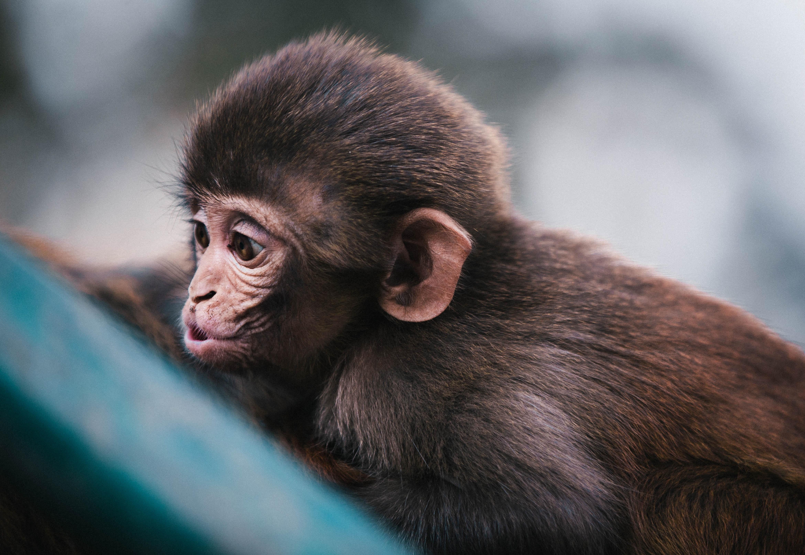
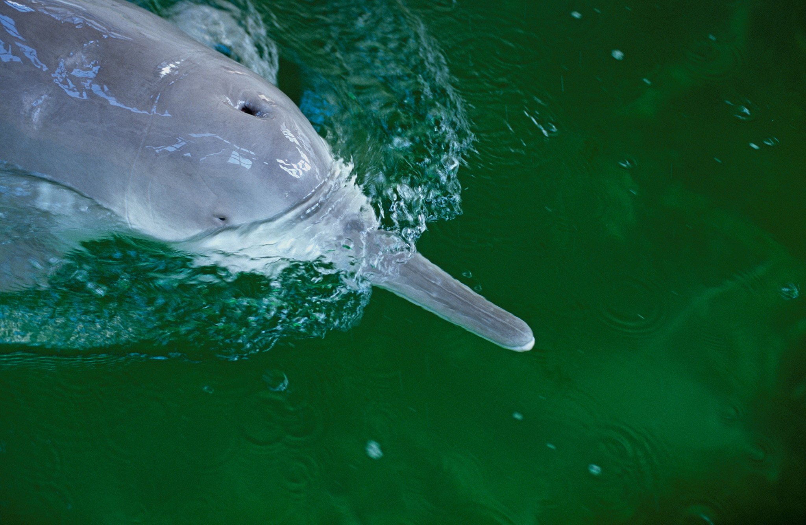
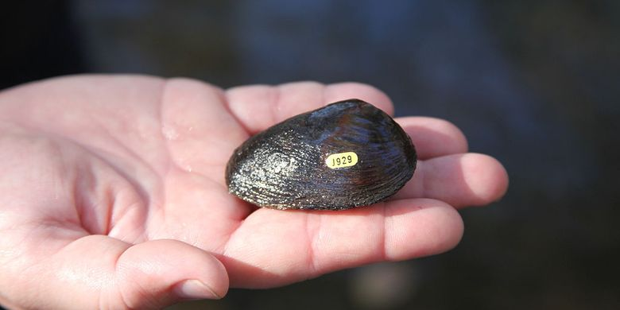
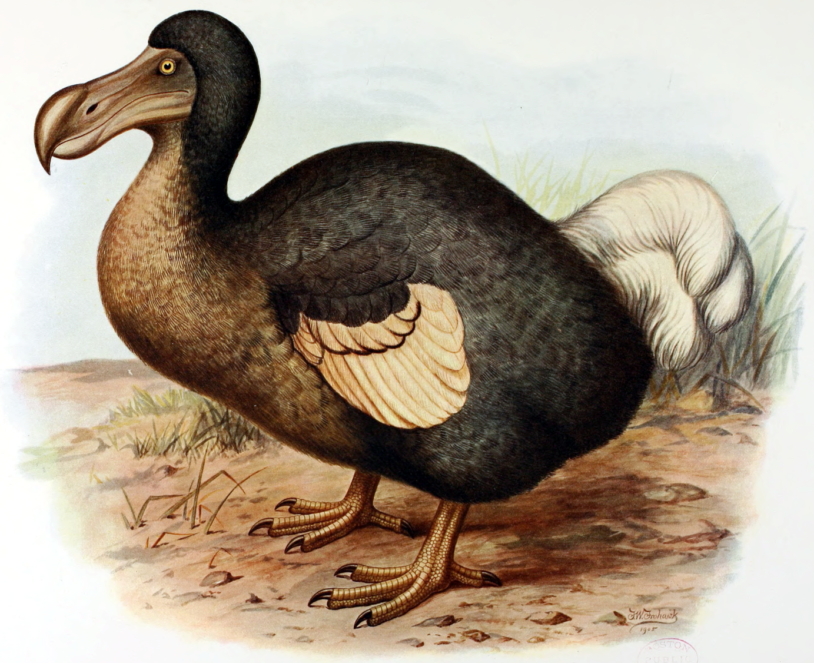
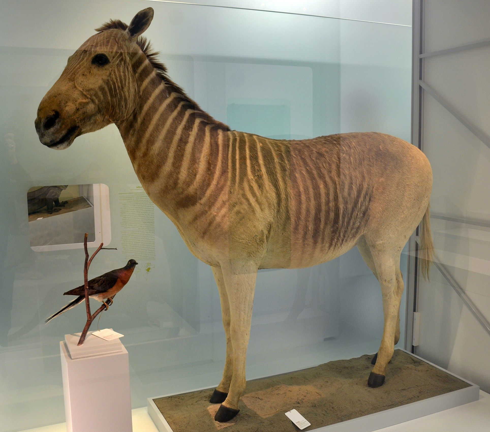
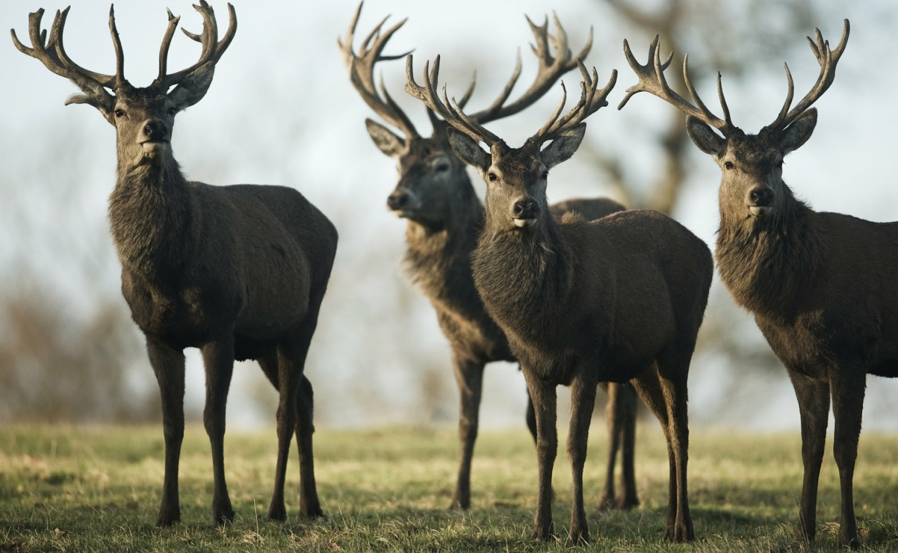
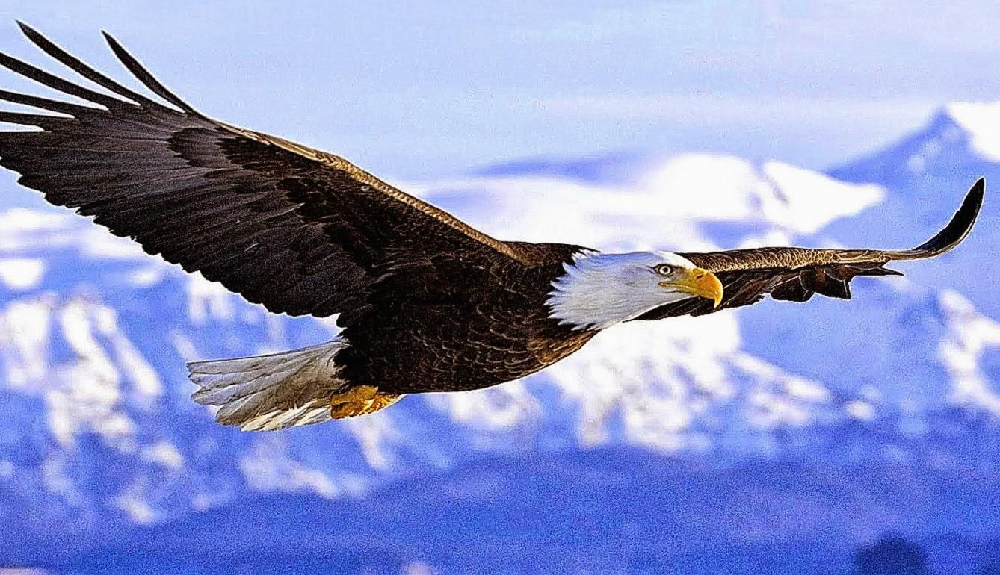

Deskripsi Hewan
Hewan, binatang, fauna, margasatwa, atau satwa adalah organisme eukariotik multiseluler yang membentuk kerajaan biologi Animalia. Dengan sedikit pengecualian, hewan mengkonsumsi bahan organik, menghirup oksigen, dapat bergerak, bereproduksi secara seksual, dan tumbuh dari bola sel yang berongga, blastula, selama perkembangan embrio.
Lebih dari 1,5 juta spesies hewan yang masih hidup telah dideskripsikan – sekitar 1 juta adalah serangga – tetapi diperkirakan ada lebih dari 7 juta spesies hewan secara total. Hewan memiliki panjang dari 8,5 mikrometer sampai 33,6 meter dan memiliki interaksi yang rumit dengan satu sama lain dan lingkungannya, membentuk jaring-jaring makanan yang rumit. Studi tentang hewan disebut zoologi.
Dalam hal ini hewan atau binatang memiliki daya gerak, cepat tanggap terhadap rangsangan eksternal, tumbuh mencapai besar tertentu, memerlukan makanan bentuk kompleks, serta jaringan tubuhnya. Hewan dapat berorganisasi, yang berarti bahwa tiap bagian dari tubuhnya merupakan subordinat dari individu sebagai keseluruhan baik sebagai bagian suatu sel maupun seluruh sel. Inilah yang disebut konsep organismal, suatu konsep yang penting dalam biologi.
Hewan Berdasarkan Makanan
Herbivora
Hewan Herbivora adalah suatu kelompok hewan pemakan tumbuhan yang biasanya tidak memiliki gigi taring yang tajam dan bertahan hidup dengan memakan tumbuhan yang ada di sekitar mereka. Habitat dari hewan herbivora ini pada umumnya berada di daerah daratan.
Karnivora
Hewan karnivora adalah suatu sekelompok hewan yang makanannya sebagian besar adalah daging, baik dimakan hidup-hidup ataupun daging dari hewan yang telah mati. Pada umumnya hewan karnivora adalah hewan buas, namun ada yang beberapa yang tidak berbahaya seperti kucing, penguin,dll. Dalam rantai makanan hewan karnivora sering disebut dengan nama predator.
Omnivora
Kata Omnivora berasal dari bahasa Latin yaitu omne yang berarti semua/semuanya dan vorare yang berarti melahap. Hewan omnivora adalah suatu sekelompok hewan yang sumber makanannya adalah tumbuh-tumbuhan dan hewan lain. Jenis ini sering disebut juga sebagai dengan hewan pemakan segala.
Hewan Berdasarkan Cara Berkembang Biak
Ovipar
Istilah dari ovipar adalah hewan yang berkemabg biak dengan cara bertelur. Hewan ovipar ini menaruh telur di luar perut. Jadi, selaput telur tersebut adalah pelindungnya sampai pada saatnya akan menetas jika sudah siap untuk anakannya.
Vivipar
Vivipar adalah retensi dan pertumbuhan sel telur yang telah dibuahi di dalam tubuh ibu sampai hewan muda, sebagai larva atau bayi baru lahir, mampu hidup mandiri. Embrio yang sedang tumbuh memperoleh makanan terus menerus dari ibu, biasanya melalui plasenta atau struktur serupa.
Ovovivipar
Hewan ovovivipar bertelur dan mengembangkan telur di dalam tubuh induknya. Telur ditetaskan di dalam tubuh induknya. Setelah telur menetas, ia tetap berada di dalam ibu untuk jangka waktu tertentu dan dipelihara dari dalam tetapi tidak melalui pelengkap plasenta. Dan pada saatnya, hewan ovovivipar dilahirkan dan mulai hidup di dunia.
Hewan Terancam Punah
Monyet Merah (Ghana)

Lumba-lumba Yangtze (Cina)

Anjing Laut Karibia (Nikaragua)

Kerang Pigtoe (USA)

Dodo (mauritius)

Sapi Laut steller (Alaska)

Quagga (afrika Selatan)

Rusa Besar Irlandia (Irlandia)

Elang Ekor Putih (Inggris)
